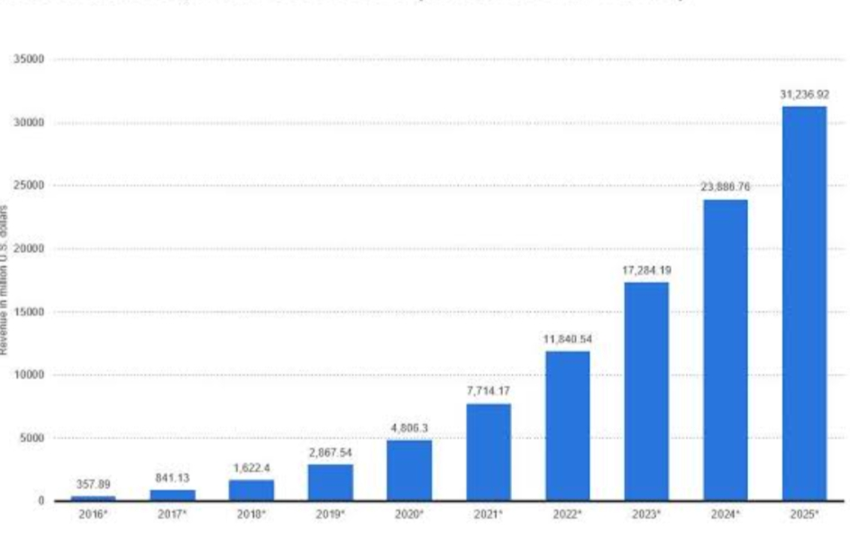

Development of using artificial intelligence
links
ul>
main page
Types of artificial intelligence
Percentage of using artificial intelligence in some sections for countries
Development of using artificial intelligence
Artificial intelligence application

Read
ALL
B2B GROWTH
B2B MARKETING
B2B RECRUITING
B2B SALES
DATA INSIGHTS
Search the blog…
Back to Blog
65+ Statistics About Artificial Intelligence
By ZoomInfo, October 24, 2019 | 8 minute read
Artificial intelligence may seem like a new edition to the business world– but it’s already transformed the way we sell B2B products and services. Early adopters of AI have achieved significant benefits – including increased efficiency, cost reduction, improved customer experience, revenue growth, and more.
But, many businesses still question the effectiveness and practicality of AI. If you’re skeptical about AI, today’s blog post is for you.
We’ve compiled more than 65 statistics about artificial intelligence. Keep reading!
The State of AI in Business
Only 23% of businesses have incorporated AI into processes and product/service offerings today (source).
The largest companies (those with at least 100,000 employees) are the most likely to have an AI strategy, but only half have one (source).
47% of digitally mature organizations say they have a defined AI strategy (source).
63% of businesses say pressure to reduce costs will require them to use AI (source).
54% of executives say AI solutions implemented in their businesses have already increased productivity (source).
61% of business executives with an innovation strategy say they are using AI to identify opportunities in data that would otherwise be missed (source).
AI Priorities and Plans
83% of businesses say AI is a strategic priority for their businesses today (source).
31% of marketing, creative, and IT professionals worldwide plan to invest in AI technology in the next 12 months (source).
61% of business professionals point to machine learning and AI as their company’s most significant data initiative for next year (source).
27% of executives say their organization plans to invest this year in cybersecurity safeguards that use AI and machine learning (source).
95% of business execs who indicated that they are skilled at using big data to solve business problems or generate insights also use AI technologies (source).
The Future of AI
The AI market will grow to a $190 billion industry by 2025, according to research firm Markets and Markets (source).
Global spending on cognitive and AI systems will reach $57.6 billion in 2021, according to market research firm IDC (source).
IDC predicts 40% of digital transformation initiatives will use AI services by 2019 (source).
IDC forecasts 75% of commercial enterprise apps will use AI by 2021 (source).
China will reap the most economic benefit from AI by 2030, followed by North America (source)